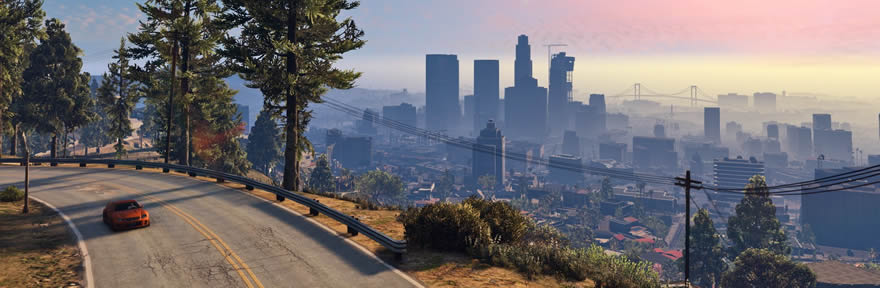

Playstation 3
Xbox One
Playstation 4
Pc
Multijogador Online
Trailer
Grand Theft Auto V (Também conhecido como GTA V, GTA 5 ou GTA Cinco) é um jogo eletrônico no estilo sandbox desenvolvido pela Rockstar North, e publicado pela Rockstar Games. O GTA V é o décimo quinto titulo da série GTA, seu lançamento aconteceu no dia 17 de setembro de 2013 nas plataformas PlayStation 3 e no Xbox 360, em 18 de novembro de 2014 foram lançadas as versões para PlayStation 4 e Xbox One, e em 14 de abril de 2015 foi lançada a última versão para a plataforma Windows.
O Grand Theft Auto V se passa na cidade metropolitana de Los Santos e no condado de Blaine County, no sul do estado de San Andreas no ano de 2013, cinco anos após os acontecimentos de Grand Theft Auto IV e Grand Theft Auto: Episódios de Liberty City, e quatro anos após Grand Theft Auto: Chinatown Wars.
História
O ex-assaltante de bancos Michael Townley vive em Los Santos, San Andreas, sob o programa proteção a testemunhas com o nome de Michael De Santa por causa de um roubo malsucedido em Ludendorff, North Yankton, nove anos antes. Ele conhece e fica amigo do criminoso Franklin Clinton quando este tenta retomar fraudulentamente o carro de seu filho Jimmy em nome de um vendedor armênio corrupto. Michael pouco depois descobre que sua esposa Amanda está dormindo com o técnico de tênis, perseguindo-o até uma mansão e destruindo-na em um ataque de raiva. A dona da mansão se revela ser a amante de um mexicano senhor do crime chamado Martin Madrazo, que exige compensação sob a ameaça de mais violência. Michael volta para sua vida de assaltante para obter dinheiro e convoca Franklin como cúmplice. Juntos eles realizam um assalto em uma joalheria para poderem pagar Madrazo. Trevor Philips, o único outro sobrevivente de Ludendorff, descobre sobre o assalto e percebe que foi o trabalho de Michael. Os dois se reencontram depois de Trevor caçar Michael até Los Santos.
O comportamento cada vez mais errático de Michael faz com que sua família lhe abandone, com suas tentativas de tornar-se alguém importante levando a um conflito contra Devin Wenston, um bilionário que desenvolve um ressentimento contra ele. Weston jura vingança depois de sua advogada morrer em um acidente pelo qual Michael recebe a culpa. Franklin resgata seu amigo Lamar Davis do gângster e ex-amigo Harold "Stretch" Joseph, que tenta matar Lamar repetidas vezes para provar-se diante de outros criminosos. Os esforços imprudentes de Trevor para consolidar seu controle sobre vários mercados negros lhe colocam em conflito contra a gangue de motoqueiros The Lost, várias gangues de rua latino-americanas, outros traficantes de metanfetamina, mercenários financiados pelo governo e a tríade.
Os agentes Dave Norton e Steve Haines do Federal Investigation Bureau (FIB) entram em contato com Michael e exigem que ele realize uma série de operações com Franklin e Trevor a fim de minar uma agência rival, a International Affairs Agency (IAA). Eles atacam um comboio armado carregando dinheiro para a IAA e assaltam um banco contendo os pagamentos de todos os policiais e funcionários públicos corruptos de Los Santos. Haines passa a sofrer um escrutínio por seus métodos, forçando Michael e Franklin a infiltrarem-se na sede do FIB para apagarem evidências sendo usadas contra ele. Michael aproveita a oportunidade para apagar o registro de suas próprias atividades, destruindo a alavancagem que Haines tinha sobre ele. O trio começa a planejar seu roubo mais audacioso: assaltar a reserva de ouro da Union Depository.
Mapa completo do jogo.
Michael faz as pazes com sua família e eles voltam a viver juntos em Los Santos. Enquanto isso, Trevor descobre que Brad Sneider, outro cúmplice de Ludendorff, não estava preso como fora levado a acreditar, mas que fora morto no assalto e enterrado em um túmulo com o nome de Michael. Os sentimentos de traição de Trevor causam fricção dentro do grupo e ameaçam minar os planos para a Union Depository. Michael e Norton são traídos por Haines e colocados em um impasse mexicano entre o FIB, IAA e a firma de segurança particular Merryweather, porém Trevor aparece para resgatá-los e afirma que apenas ele tem o direito de matar Michael. Os dois mantém a relação conturbada, mas concordam em realizar o assalto da Union Depository e se separarem depois.
O assalto da Union Depository é realizado com sucesso, porém Franklin é abordado por dois grupos que separadamente exigem que ele mate Michael ou Trevor. Haines e Norton defendem que Trevor é perigoso, enquanto Weston deseja vingança pela traição de Michael. Franklin fica com três opções: matar Michael, matar Trevor ou não matar nenhum dos dois e enfrentarem seus inimigos juntos. Caso mate um dos dois, ele quebra relações com o sobrevivente e volta para sua antiga vida. Caso escolha a terceira opção, os três enfrentam uma onda de ataque de forças do FIB e Merryweather, em seguida partindo para matar Haines, Stretch, Wei Cheng dos tríades e Weston. Michael e Trevor se reconciliam e os três param de trabalharem juntos mas continuam amigos.